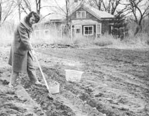

We don't own this once weed-filled lot, but the owner is happy to let us use it without charge because growing potatoes the organic way both keeps the weeds under control and helps build the fertility of the property's soil. The idea saves us many food dollars, too!